東京大学 2017年 理科 第5問
問題
kを実数とし、座標閉園上で次の2つの放物線C,Dの共通接線について考える。
C: 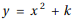
D: 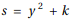
(1) 直線y=a x+bが共通接線であるとき、aを用いてkとbを表せ。ただしa≠-1とする。
(2) 傾きが2の共通接線が存在するようにkの値を定める。このとき、共通接線が3本存在することを示し、それらの傾きとy切片を求めよ。
解答
(1)
点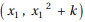におけるCの接線は


よって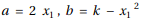
同様に点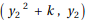におけるDの接線は
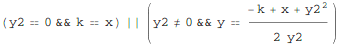
x=kはCの接線にならないので、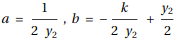
a=0のときはCの接線にならず、また、この両方が一致するような と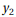が存在する条件は
と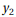が存在する条件は
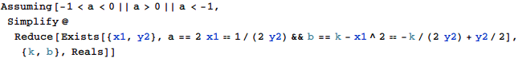
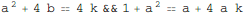
これをk,bについて解いて
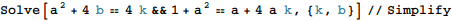
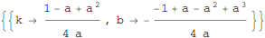
(2)
a=2のとき、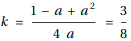
これを使ってa,bについて解くと
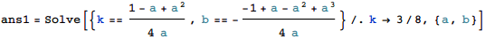
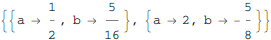
また、a=-1のとき、
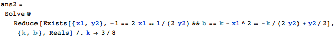
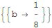
より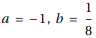も接線として存在する。
従ってこれら3本の接線が存在することが示され、図示すると下図となる。
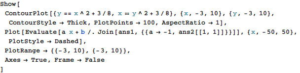
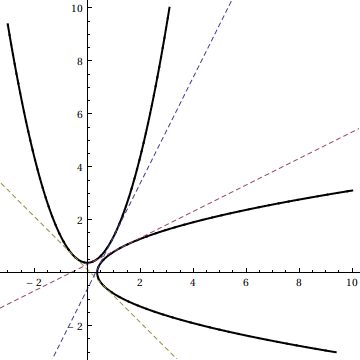
求める傾きaとy切片bは
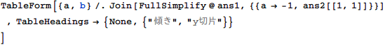
| 傾き | y切片 |
| 2 | 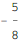 |
| 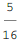 | |
| -1 |
補足・感想
あまりスマートでないので、もうちょっと良い解答ができそう。